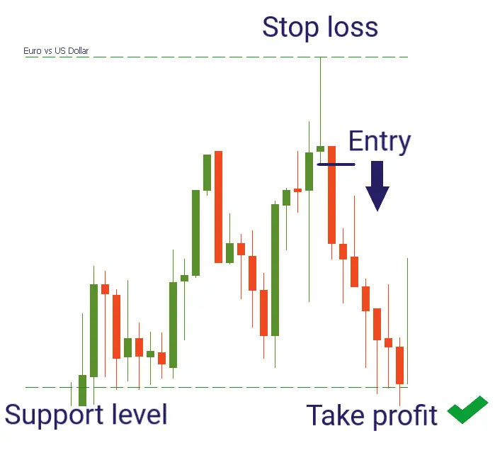

Das Shooting Star-Muster ist ein Handelsmuster, das auf das Fehlen einer Aufwärtsbewegung
im Aktienmarkt und auf eine abwärts gerichtete Tendenz hinweist. Dieses Muster wird mit
einem einzigen Kerzenleuchter gebildet. Es hat einen kleinen langen abwärts gerichteten
Kerzenleuchter-Körper, der nahe seinem Eröffnungspreis schließt.
Das Shooting Star-Muster signalisiert einen schwachen Abwärtstrend. Wenn dieses Muster
beobachtet wird, könnte dies möglicherweise dazu führen, dass man mit einer Abwärtspräferenz
auf dem Aktienmarkt handelt.
